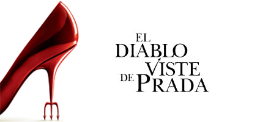

EL DIABLO VISTE A LA MODA

The Devil Wears Prada (en España, El diablo viste de Prada y en Hispanoamérica, El diablo viste a la moda) es una película estadounidense del género comedia dramática dirigida por David Frankel, estrenada el 22 de junio de 2006. Está basada en la novela homónima de la periodista Lauren Weisberger, quien a su vez se inspiró en vivencias propias. Tanto el libro como la película son una sátira del mundo de la moda, por lo que siguen la línea de la película Prêt-à-porter dirigida por Robert Altman. La película fue filmada entre octubre y diciembre de 2005 en Nueva York y París.